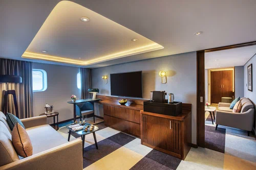
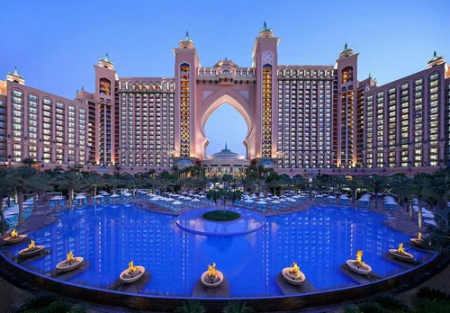
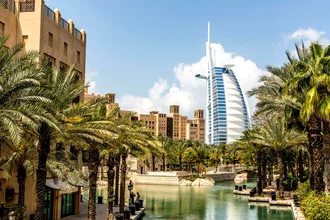

| 
Отель Queen Elizabeth 2 расположен возле пристани для яхт Мина-Рашид. К услугам гостей рестораны, ночные клубы и развлекательный центр. Гости по достоинству оценят этот объект культурного наследия, где можно ближе познакомиться с морской историей.В отеле Queen Elizabeth 2 в распоряжении гостей ресторан, бесплатная частная парковка и бар. На всей территории работает бесплатный Wi-Fi. Гостям предлагают услуги консьержа. Гости могут воспользоваться услугой обмена валюты, а также заказать доставку еды и напитков в номер. На территории установлен банкомат. |
| 
Пятизвездочный курортный отель Atlantis с собственным песчаным пляжем и великолепным видом на Персидский залив расположен в Дубае на острове Палм-Джумейра. В отеле оборудован подводный аквариум. Кроме того, гости могут бесплатно посещать аквапарк Aquaventure и океанариум Lost Chambers. На всей территории отеля предоставляется бесплатный Wi-Fi.Все номера отеля с балконом с красивым видом оформлены в арабском стиле или океанской тематике. Номера с гостиной зоной оснащены телевизором с плоским экраном и спутниковыми каналами, в числе удобств бесплатные принадлежности для чая/кофе и мини-бар. В некоторых номерах в распоряжении гостей очень просторная терраса с панорамным видом на Пальмовые острова, а в некоторых — большая гидромассажная ванна, установленная в центре ванной комнаты.В ресторане Hakkasan подают оригинальные блюда кантонской кухни в современной обстановке. В превосходном ресторане Nobu гостям предложат блюда современной японской кухни с учетом арабских традиций. В меню бара-ресторана Bread Street Kitchen представлены фирменные блюда британской кухни и великолепные напитки от шеф-повара Гордона Рамзи. В ресторане Ayamna с прекрасным видом на Пальмовые острова и городской пейзаж Дубая сервируются традиционные блюда ливанской кухни и отличные напитки. |
| 
Отель расположен в районе Дубай-Нолидж-Виллидж. К услугам гостей круглосуточный тренажерный зал и киоск с закусками и напитками. Гостям предоставляется бесплатный трансфер до торгового центра Mall of the Emirates и пляжа Джумейра рядом с отелем Burj Al Arab.Каждое утро в ресторане Great Room отеля Holiday Inn Express сервируется завтрак «шведский стол». В течение всего дня гости могут заказать полезный салат или вкусные легкие блюда. В лобби-баре с непринужденной обстановкой можно посмотреть спортивные передачи на большом экране.Гостям отеля Holiday Inn Express - Dubai Internet City предоставляются номера с окнами с двойным остеклением и мебелью из темного дерева. В собственной ванной комнате установлен бодрящий душ с сильным напором воды.Отель Holiday Inn Express находится всего в нескольких минутах от дубайских районов Интернет-Сити и Медиа-Сити. Поездка на такси до международного аэропорта Дубай занимает 30 минут. |